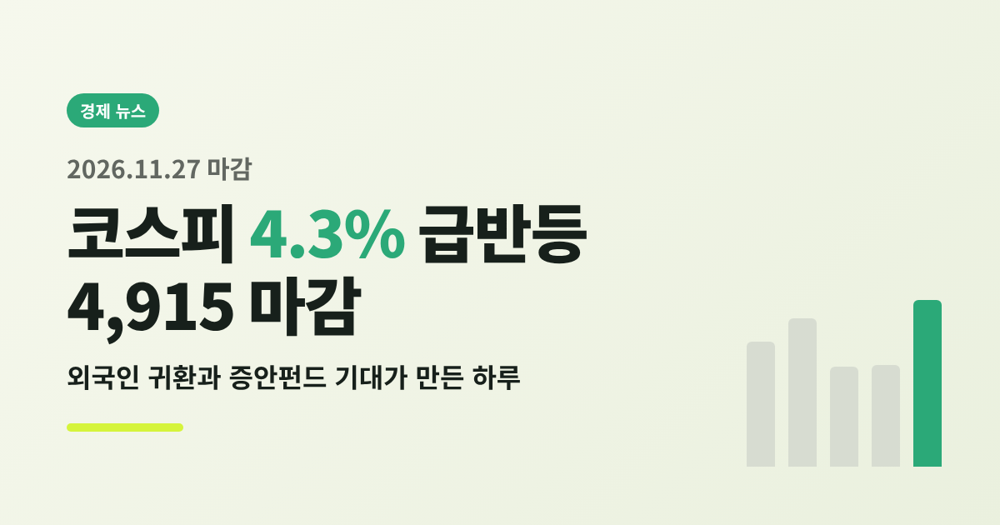
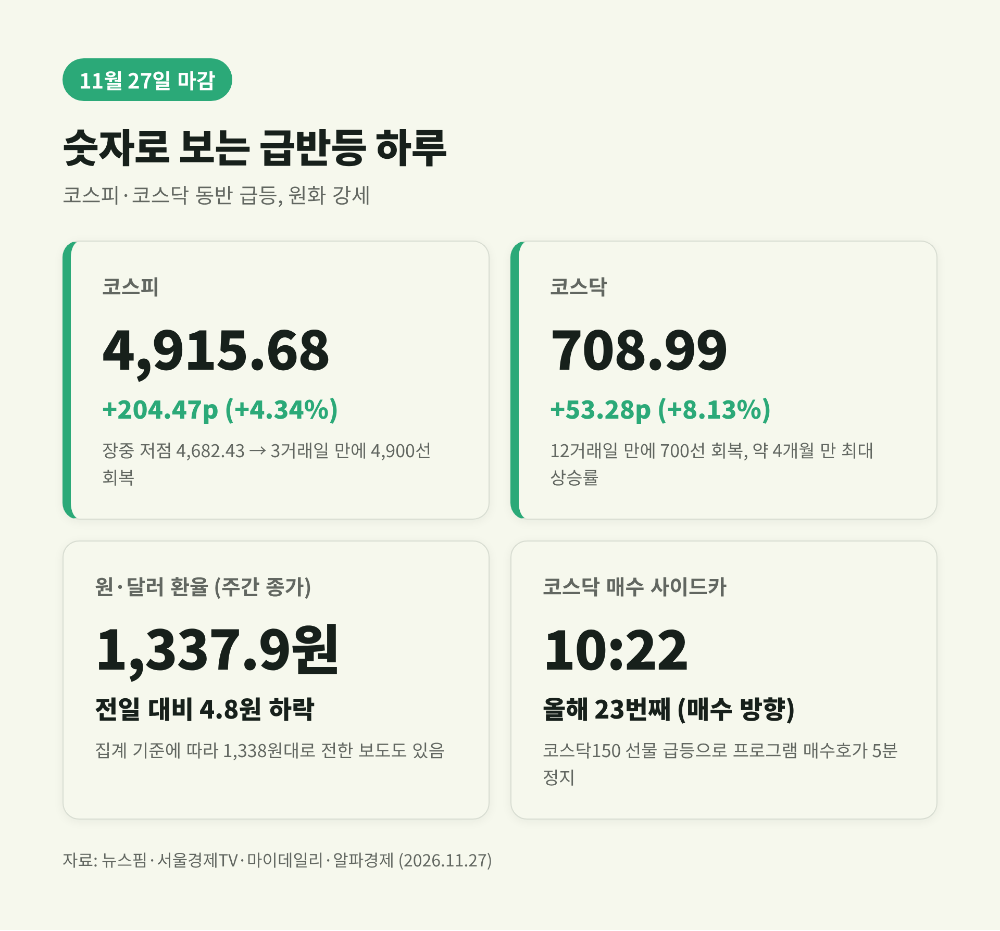
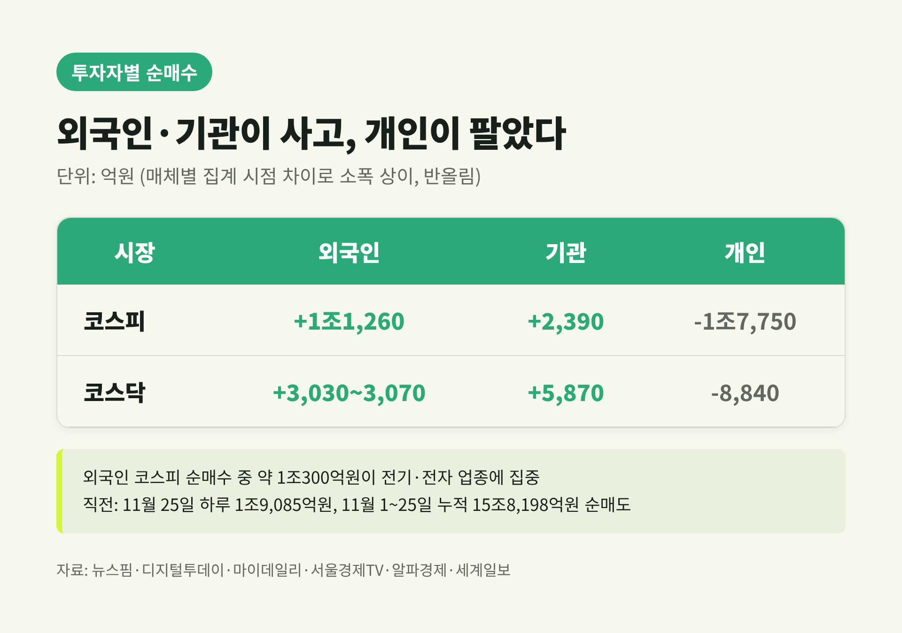
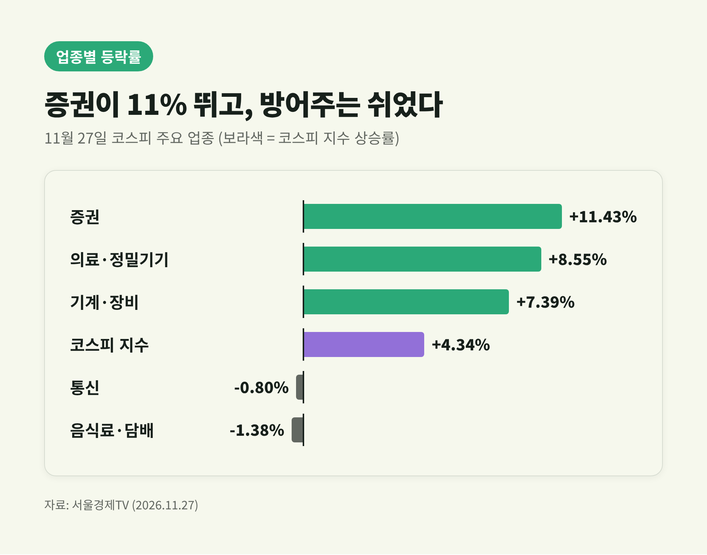
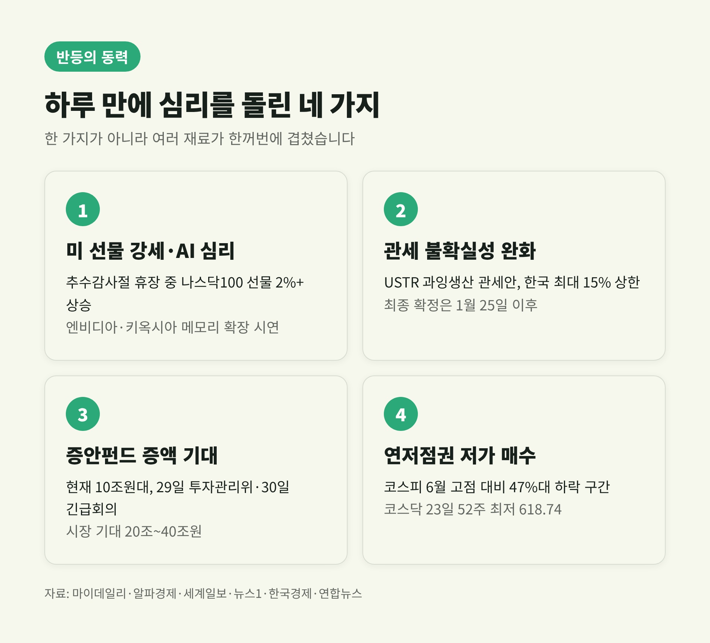
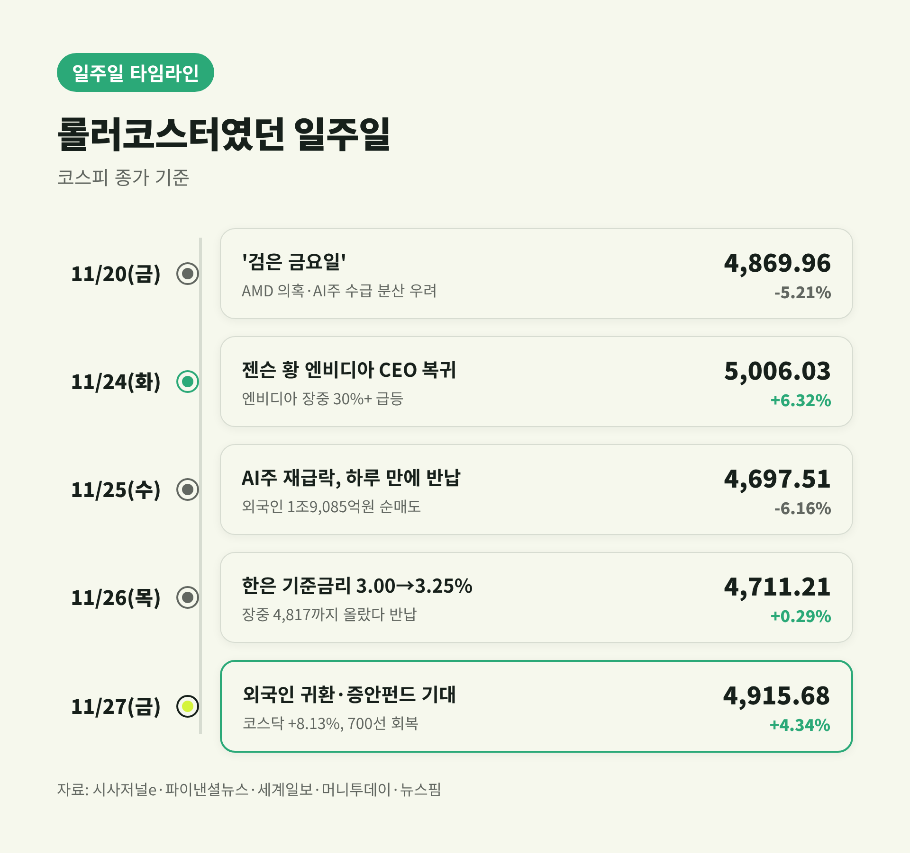
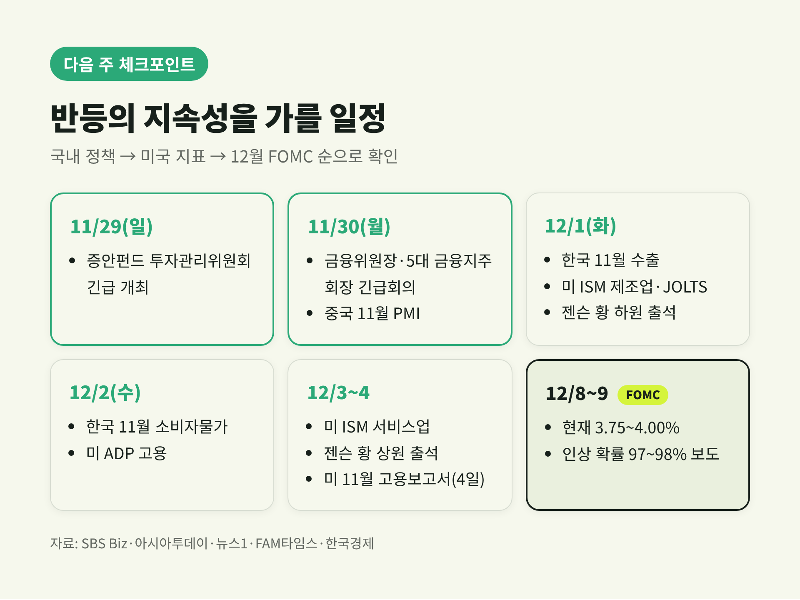

코스피 4.3% 급반등 4,915 마감, 외국인 귀환과 증안펀드 기대가 만든 하루
이번 글에서는 11월 27일 코스피가 4.34% 급반등해 4,915선에서 마감한 배경을 정리해 보겠습니다.
누가 사고 누가 팔았는지, 무엇이 심리를 돌렸는지, 그리고 이 반등이 이어질 수 있는지를 차례로 짚습니다.
3줄 요약
- 코스피 4,915.68(+4.34%), 코스닥 708.99(+8.13%). 코스닥은 12거래일 만에 700선을 되찾았습니다.
- 외국인이 코스피에서 약 1조1,260억원을 순매수하며 돌아왔고, 증안펀드 증액 기대와 미국 지수선물 강세가 겹쳤습니다.
- 다만 증권가는 "추세 반등은 아직 확인되지 않았다"고 봅니다. 다음 주 젠슨 황 청문회, 미국 고용지표, 12월 FOMC가 분기점입니다.
이 글은 정보 제공 목적이며 투자 권유가 아닙니다. 특정 종목의 매수·매도를 권하지 않으며, 투자 판단과 책임은 투자자 본인에게 있습니다.

■ 무슨 일이 있었나: 하루 만에 204포인트
코스피는 27일 전 거래일보다 204.47포인트(4.34%) 오른 4,915.68에 장을 마쳤습니다.
출발은 조용했습니다. 4,728.80으로 시작해 장중 4,682.43까지 밀리기도 했습니다.
흐름이 바뀐 건 오전입니다. 외국인 매수가 붙으면서 4,800선을, 오후 초반에는 4,900선을 넘어섰습니다.
종가 기준 4,900선 회복은 3거래일 만입니다.
코스닥은 더 크게 뛰었습니다.
53.28포인트(8.13%) 오른 708.99로, 700선을 12거래일 만에 되찾았습니다.
하루 상승률로는 7월 31일(+11.63%) 이후 약 4개월 만에 가장 큽니다.
오전 10시 22분에는 코스닥150 선물 급등으로 매수 사이드카가 발동됐습니다. 올해 코스닥 매수 사이드카로는 23번째입니다.
원·달러 환율도 함께 내려왔습니다.
주간 종가 기준 1,337.9원으로 전일보다 4.8원 하락했습니다. 집계 기준에 따라 1,338원대(5원 안팎 하락)로 전한 매체도 있습니다.
원화가 강해지면 외국인 입장에서는 환차손 부담이 줄어듭니다. 주식 매수와 원화 강세가 같은 방향으로 움직인 하루였습니다.

■ 누가 샀나: 외국인과 기관의 '쌍끌이'
이번 반등의 주인공은 외국인입니다.
코스피에서 외국인은 약 1조1,260억원, 기관은 약 2,390억원을 순매수했습니다. 개인은 약 1조7,750억원을 순매도했습니다.
매체별 집계 시점에 따라 수억원 차이가 있지만 방향과 규모는 일치합니다.
눈여겨볼 대목은 외국인 매수의 쏠림입니다.
외국인 순매수 가운데 약 1조300억원이 전기·전자 업종에 몰렸습니다. 사실상 반도체 대형주를 다시 담았다는 뜻입니다.
코스닥에서는 기관이 앞장섰습니다.
기관 약 5,870억원, 외국인 약 3,030억~3,070억원 순매수, 개인 약 8,840억원 순매도였습니다.
양 시장을 합치면 외국인과 기관이 2조원 넘게 사들인 셈입니다.
이 숫자가 의미 있는 이유는 직전 흐름 때문입니다.
외국인은 25일 하루에만 1조9,085억원을 팔았고, 11월 들어 25일까지 누적 순매도가 15조8,198억원에 달했습니다.
그 매도세가 하루 만에 순매수로 뒤집힌 것입니다.

■ 무엇이 올랐나: 반도체가 끌고, 증권·로봇·2차전지가 밀었다
코스피 시가총액 상위주는 KB금융(-0.21%)을 빼고 대부분 올랐습니다.
삼성전자는 4.55% 오른 179,100원, SK하이닉스는 5.41% 오른 111만원에 마감했습니다.
삼성전자우(+5.84%), SK스퀘어(+5.37%), LG에너지솔루션(+4.80%), 삼성전기(+4.72%), 현대차(+3.86%)도 함께 올랐습니다.
업종별로는 증권이 11.43% 뛰어 가장 강했습니다.
증시가 살아나면 거래대금이 늘고, 증권사 실적 기대가 커지는 구조가 반영된 것으로 보입니다.
의료·정밀기기(+8.55%), 기계·장비(+7.39%)가 뒤를 이었습니다.
반대로 음식료·담배(-1.38%), 통신(-0.80%) 같은 방어주는 약했습니다. 위험을 피하던 돈이 다시 위험자산으로 옮겨간 모습입니다.
코스닥은 시가총액 상위 10개 종목이 모두 올랐고, 그중 6개가 두 자릿수 상승률을 기록했습니다.
주성엔지니어링(+14.36%), 삼천당제약(+14.12%), 에코프로(+13.91%), 레인보우로보틱스(+13.70%), 에코프로비엠(+13.44%), 리노공업(+12.09%)입니다.
로봇주에는 삼성전자가 내년 1월 CES 2027에서 첫 휴머노이드 로봇을 공개할 것이라는 기대가 실렸습니다.

■ 왜 하루 만에 돌았나: 네 가지 동력
반등의 이유는 하나가 아니었습니다. 크게 네 갈래로 정리할 수 있습니다.
첫째, 미국 지수선물 강세와 AI 심리 회복입니다.
26일 미국 증시는 추수감사절로 휴장했습니다. 대신 아시아 시간대에 나스닥100 선물이 2% 넘게 올랐습니다.
엔비디아와 키옥시아가 GPU용 SSD 기반 메모리 확장 기술을 시연했다는 소식도 메모리 반도체 매수 심리를 되살렸습니다.
둘째, 관세 불확실성이 한 겹 걷혔습니다.
미국무역대표부(USTR)는 한국·일본·중국·EU 등 14개 경제주체를 대상으로 '과잉생산 관세'안을 공개했습니다.
한국은 모든 품목에 최대 15%, 즉 기존 한미 무역합의 수준이 상한으로 제시됐습니다.
대신증권은 추가 관세 비용을 연 6억5천만달러 수준으로 추산하며 영향이 제한적이라고 봤습니다. 최종 세율은 내년 1월 25일 반박 의견 수렴을 거쳐 확정됩니다.
셋째, 증안펀드 증액 기대입니다.
증권시장안정펀드(증안펀드)는 현재 10조원대(보도에 따라 10조7,500억~10조7,600억원) 규모입니다.
29일 증안펀드 투자관리위원회가 긴급 개최되고, 30일에는 이억원 금융위원장이 5대 금융지주 회장, 산업은행 회장 등과 시장안정 긴급회의를 엽니다.
시장에서는 20조~40조원 증액까지 기대하는 목소리가 나왔습니다. 코스닥이 유독 크게 오른 데에는 이 기대가 컸다는 분석입니다.
넷째, 연저점권 저가 매수입니다.
코스피는 6월 19일 장중 사상 최고치 9,385.59를 찍은 뒤, 11월 17일 기준 고점 대비 47% 넘게 빠져 있었습니다.
코스닥도 23일 52주 최저치 618.74까지 내려갔습니다. 낙폭이 깊었던 만큼 되돌림도 컸습니다.

■ 배경: 롤러코스터였던 일주일
이날의 반등은 앞선 일주일과 함께 봐야 의미가 보입니다.
20일 금요일, 이른바 '검은 금요일'에 코스피는 5.21% 떨어진 4,869.96으로 마감했습니다. 약 10개월 만의 최저치였습니다.
AMD의 수출통제 위반 의혹, 앤트로픽 나스닥 상장으로 AI주 수급이 분산될 수 있다는 우려가 미국 증시를 2% 넘게 끌어내린 여파였습니다.
24일에는 반대로 6.32% 급등해 5,006.03을 회복했습니다.
11월 12일 물러났던 젠슨 황이 엔비디아 이사회 만장일치 결정으로 CEO에 복귀했다는 소식 덕분이었습니다. 엔비디아 주가는 장중 30% 넘게 뛰었습니다.
그러나 다음 날인 25일, 코스피는 6.16% 급락해 4,697.51로 주저앉았습니다.
간밤 엔비디아(-5.9%)와 마이크론(-11%)이 급락했고, 앤트로픽 주가가 공모가를 밑돈 것이 AI 성장성 의문을 키웠습니다.
삼성전자는 9.87%, SK하이닉스는 11.05% 떨어졌습니다.
26일에는 한국은행이 기준금리를 연 3.00%에서 3.25%로 올렸습니다.
금통위원 7명 중 5명이 찬성했고, 황건일·이수형 위원은 동결 의견을 냈습니다. 점도표 중간값은 3.25%에서 3.50%로 높아졌습니다.
코스피는 장중 4,817.77까지 올랐다가 상승분 대부분을 반납하고 4,711.21(+0.29%)에 마감했습니다.
예전에는 하루 1~2% 움직임도 큰 뉴스였습니다. 지금은 하루 5~6%가 오르내리는 장이 일상이 됐습니다.
27일 종가는 '검은 금요일' 종가(4,869.96)를 약 46포인트 웃돕니다. 일주일의 낙폭을 겨우 되돌린 수준이라고 보는 편이 정확합니다.

■ 쟁점: 이번 반등은 이어질 수 있을까
여기서부터는 판단이 갈립니다.
긍정적으로 보는 쪽은 밸류에이션을 근거로 듭니다.
대신증권 이경민 FICC리서치부장은 코스피 4,600~5,000 구간을 펀더멘털보다 과도하게 빠진 '언더슈팅' 구간으로 보고 비중확대 의견을 유지했습니다.
그러나 같은 보고서도 추세 반등은 아직 확인되지 않았다고 선을 그었습니다.
조건으로 세 가지를 들었습니다. AI 투자심리 회복, 미국 국채금리 안정, 그리고 외국인의 현물·선물 동반 순매수 지속입니다.
하루의 외국인 순매수만으로는 이 조건을 충족했다고 보기 어렵습니다.
신중론의 근거도 구체적입니다.
키움증권 한지영 연구원은 반등 때마다 매물이 나오고, 외국인 매도를 받아낼 뚜렷한 주체가 없다고 지적했습니다. 증안펀드 자금이 실제로 들어오기 전까지는 매수 여력이 제한적일 수 있다는 진단입니다.
거래도 얇습니다. 11월 코스닥 일평균 거래대금은 5조3천억원으로, 올해 평균(10조2천억원)의 절반 수준이었습니다.
불과 사흘 전 6% 급등이 다음 날 6% 급락으로 지워진 전례도 있습니다.
증안펀드 자체의 한계도 있습니다.
은행들은 현재 약정만 해두었을 뿐 실제 납입한 돈은 없습니다. 자금 요청이 오면 자체 유동성을 쓰거나 시장에서 조달해야 합니다.
일부 은행은 1조원 약정의 절반만 집행돼도 보통주자본비율이 4~5bp 떨어질 것으로 추산했습니다.
기대가 실제 집행 규모에 못 미치면, 기대로 오른 만큼 실망 매물이 나올 수 있습니다.
| 구분 | 반등 지속 쪽 근거 | 신중론 쪽 근거 |
|---|---|---|
| 수급 | 외국인 순매수 전환(약 1.1조원) | 11월 누적 외국인 순매도 15.8조원(25일까지) |
| 정책 | 증안펀드 증액·가동 기대 | 실제 집행 전, 금융사 부담 |
| 밸류 | 고점 대비 40%대 하락, 언더슈팅 | 거래대금 연평균의 절반 |
| 대외 | 관세 15% 상한, 미 선물 강세 | 미 물가·금리 인상 압력 |
■ 다음 주 변수: 청문회, 고용지표, 그리고 FOMC
다음 주는 일정이 촘촘합니다.
국내에서는 29일 증안펀드 투자관리위원회와 30일 금융위원장 주재 긴급회의가 먼저 열립니다. 증액 규모와 집행 방식이 구체적으로 나오는지가 관건입니다.
12월 1일에는 11월 수출 통계, 2일에는 11월 소비자물가(10월 2.8%)가 나옵니다.
미국 쪽 변수는 더 무겁습니다.
10월 PCE 물가 상승률은 3.8%로 넉 달 연속 올랐고, 근원 PCE도 3.3%로 9월(3.1%)보다 높아졌습니다. 3분기 GDP 성장률은 연율 4.3%로 3년 만에 가장 높았습니다.
성장도 물가도 뜨거우니 연준이 금리를 올릴 것이라는 전망이 굳어졌습니다. 현재 연방기금금리는 3.75~4.00%이고, 12월 8~9일 FOMC에서의 인상 확률이 97~98%라는 보도도 나왔습니다.
12월 1일 ISM 제조업지수와 구인이직보고서, 4일 11월 고용보고서가 그 판단을 보탭니다.
고용이 너무 강하면 금리 부담이 커지고, 완만하게 식으면 국채금리 안정과 위험자산 회복에 도움이 될 수 있습니다.
AI 쪽에서는 젠슨 황 엔비디아 CEO의 의회 출석이 있습니다. 1일 하원, 3일 상원 일정이 잡혔습니다.
메가스피드를 통한 칩 우회 수출 의혹과 관련한 미 상무부·하원 조사가 진행 중이어서, 이 자리에서 불확실성이 걷히는지가 반도체주 방향을 가를 수 있습니다.

정리하면 이렇습니다.
27일의 반등은 외국인 귀환, 관세 불확실성 완화, 증안펀드 기대가 한꺼번에 맞물린 결과였습니다.
반대로 말하면, 그중 하나라도 어긋나면 흔들릴 수 있는 반등이기도 합니다.
"하루의 숫자보다 다음 일주일의 수급이 더 많은 것을 말해줄 것입니다."
이번 반등이 바닥의 신호였냐고 물으신다면, 아직은 답을 미루고 다음 주 외국인의 발걸음을 지켜보겠다고 말씀드리겠습니다.
다시 한번 말씀드리면, 이 글은 정보 제공 목적이며 투자 권유가 아닙니다.
참고자료
- 뉴스핌 — 코스피, 4%대 상승에 4900선 회복…코스닥도 8% 급등 (2026-11-27)
- 서울경제TV — 코스피, 증안펀드 증액 기대에 4900선 회복…코스닥 700 탈환 (2026-11-27)
- 디지털투데이 — 증안펀드 기대에 코스피 4900선 복귀, 코스닥 8.13% 폭등 (2026-11-27)
- 알파경제 — 코스피, 증안펀드 기대·외국인 매수에 4.34% 급등 (2026-11-27)
- 마이데일리 — 돌아온 외국인에 코스피 4900선 마감 (2026-11-27)
- 한국경제 — 증안펀드 증액 기대에 코스닥 급등 (2026-11-27)
- 머니투데이 — 금리 인상 날 코스피 상승폭 꺾여 (2026-11-26)
- 시사저널e — 검은 금요일 코스피 5.21% 급락, 4869 마감 (2026-11-20)
- 세계일보 — 파랗게 질린 코스피 4697 마감 (2026-11-25)
- MTN — 코스피, 6% 급락 4697 마감 (2026-11-25)
- 파이낸셜뉴스 — 코스피, 젠슨 황 복귀에 6.32% 급등 (2026-11-24)
- 한국경제 — 젠슨 황, 엔비디아 CEO 전격 복귀 (2026-11-24)
- 한국경제 — 美 10월 PCE 3.8%, 3분기 GDP 4.3% (2026-11-25)
- FAM타임스 — 미 10월 PCE 3.8%·3분기 GDP 4.3%, 12월 인상 굳어지나 (2026-11-27)
- 아시아투데이 — 휴장 속 숨 고르기, 다음주 변동성 주목 (2026-11-27)
- 뉴스1 — 금융위, 증안펀드 투자관리위 연다 (2026-11-26)
- 인베스트조선 — 은행들, 증안펀드 가동에 자금계획 점검 (2026-11-27)
- SBS Biz(서플) — 다음 주 경제일정 (2026-11-27)
- 브레이크뉴스 — 대신증권 다음주 전망 (2026-11-27)
- 세계일보 — 美 USTR 과잉생산 관세, 韓 15% 상한 유지 (2026-11-26)
- 연합뉴스(한민족센터) — 올해 장중 고점 대비 47% 급락 (2026-11-17)